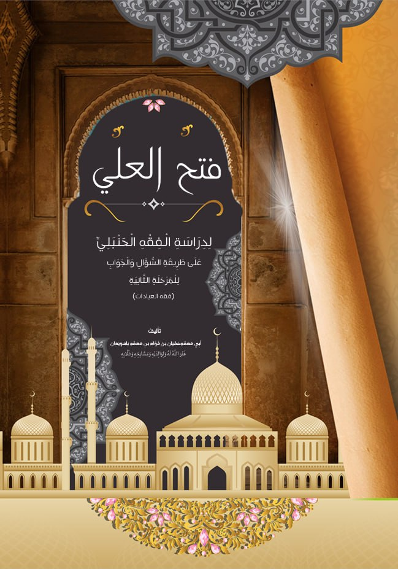
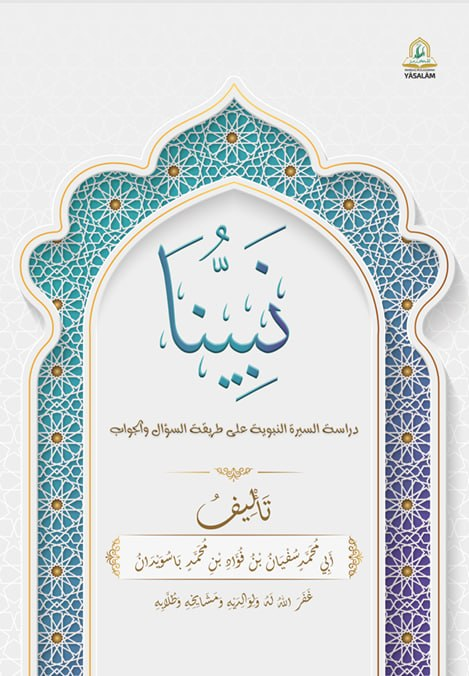

Arsip Kitab & Setoran
Daftar ilmu, karya tulis, dan rekaman setoran yang telah dipelajari.

KITAB AQIDATUNA
Ilmu AqidahKitab dasar yang meringkas poin-poin dalam beraqidah
Kumpulan Video Setoran
Setoran Marhalah 1:
Setoran Marhlah 2:
Setoran Marhlah 3:

KITAB FATHUL ALI
Ilmu FiqihKitab fiqih dasar hukum praktis ibadah harian mulai dari bersuci (thaharah), shalat, hingga zakat.
Kumpulan Video Setoran
Setoran Marhalah 1:
Setoran Marhalah 2:
Setoran Marhalah 3:

KITAB NABIYYUNA
Sekitar Siroh NabiKumpulan ringkasan dari kisah nabi
Kumpulan Video Setoran
Setotan Marhalah 1
Setotan Marhalah 2
Setotan Marhalah 3